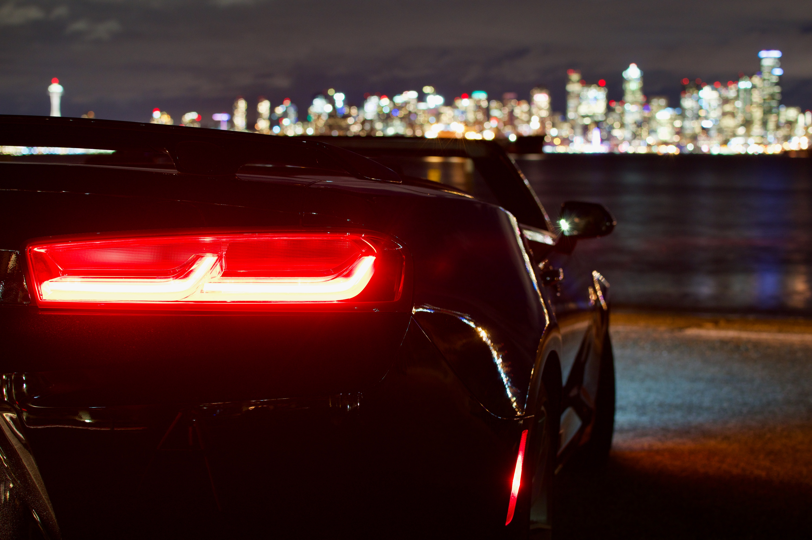

- MUSTANG
- CAMARO
- DODGE
CAMARO
제너럴 모터스 산하 쉐보레에서 생산 중인 후륜구동 2도어 2 + 2 타입 하드탑, 쿠페 포니카. 카마로(Camaro)라는 명칭은 친구라는 의미의 프랑스의 고어(古語)에서 유래했다.
현재 1세대를 시작하여 6세대 카마로까지 존재하며, 국내에는 5세대 카마로가 한 노란색 자동차 로봇 덕분에 유명해졌다. 덕분에 한국GM이 발족함과 동시에 100대 한정으로 판매가 시작되었다.
대한민국에서는 5세대 323마력 V6 3.6리터 DOHC 가솔린 직분사 모델이 4,279만 원에 판매되었으나, 한국GM 관계자에 따르면 머스탱에 비해 가격경쟁력이 낮을 정도였기 때문에 판매 실패의 주요 원인이었다고 한다.
2016년 6월, 국내에 5천만원이라는 비교적 저렴한 가격에 6세대 V8 6.2 SS 모델이 수입되기 시작했다
